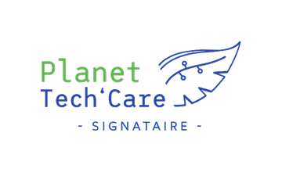

Qu’est-ce que Planet Tech’Care ?
Planet Tech’Care est une plateforme qui met en relation des organisations et des acteurs de la formation qui souhaitent se mobiliser pour réduire l’empreinte environnementale du numérique avec un réseau de partenaires, experts du numérique et de l’environnement.
En adhérant à ce manifeste, les signataires ont accès gratuitement à un programme d’accompagnement composé d’ateliers conçus par les partenaires de l’initiative. La plateforme est animée par le programme Numérique Responsable de Syntec Numérique.
Pourquoi Greenspector s’engage doublement dans cette démarche nationale ?

Greenspector, membre du Syntec Numérique et entreprise à mission, s’engage à la fois comme signataire du manifeste et s’engage en tant que partenaire de ce programme pour accompagner les organisations signataires à rentrer dans l’action, agir pour un Numérique sobre et inclusif. La sobriété numérique est un facteur majeur de réduction de notre impact mais elle est aussi un facteur de performance. La prise de conscience des acteurs faiseurs du numérique est clé dans l’image que renvoie le numérique aujourd’hui, ce monde infini, sans barrière et sans limite dans les usages. Beaucoup veulent ignorer cet impact en regardant davantage les apports numériques à la réduction des impacts environnementaux mais elle ne doit pas devenir cette industrie qui n’a pas su réagir assez tôt comme on le reproche aujourd’hui à nos modèles de déplacements, à notre alimentation. Au-delà de la prise de conscience, l’initiative Planet Tech Care est un moyen de mobiliser le monde numérique à s’engager. Le sujet de l’éco-conception des services numériques sera un moyen abordé pour réduire la consommation d’énergie et de ressources en phase d’usage mais aussi de réduire l’impact du matériel en l’utilisant mieux et en prolongeant sa durée de vie.
Rappel des points clés du manifeste :
1. Reconnaître que les changements environnementaux constituent un enjeu majeur pour l’humanité sur lequel les acteurs du numérique ont un impact et doivent se mobiliser :
- S’engager publiquement via la signature du manifeste
- Diffuser l’initiative auprès de leur sphère d’influence
2. Se mobiliser pour contribuer, à leur niveau, à la maîtrise des risques environnementaux
- Réaliser une mesure de l’empreinte environnementale (à minima carbone) de leurs produits et services numériques
- Identifier et mettre en œuvre des actions de réduction de leurs impacts environnementaux
- Identifier et mettre en œuvre des actions permettant d’allonger la durée de vie des produits et services numériques
- Partager ces informations et démarches auprès des parties prenantes concernées
3. Pour les acteurs de l’enseignement ou proposant des formations, mettre en place des modules ou cursus de formation permettant de développer les compétences des élèves et des collaborateurs en matière de numérique responsable et écologiquement efficient.